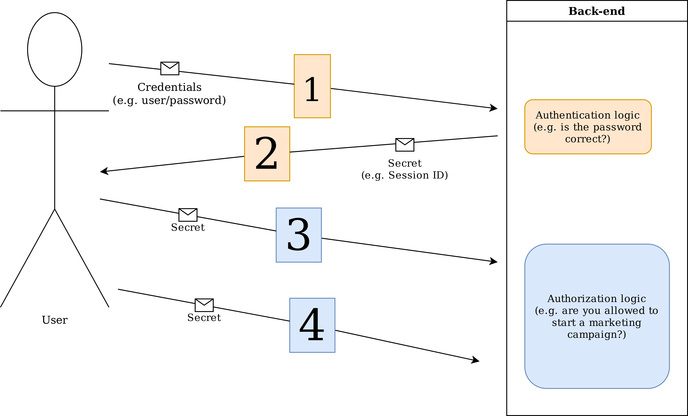
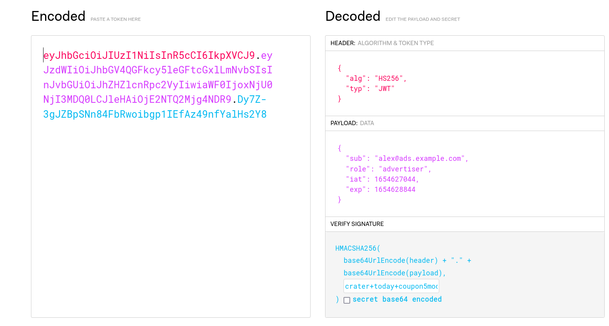
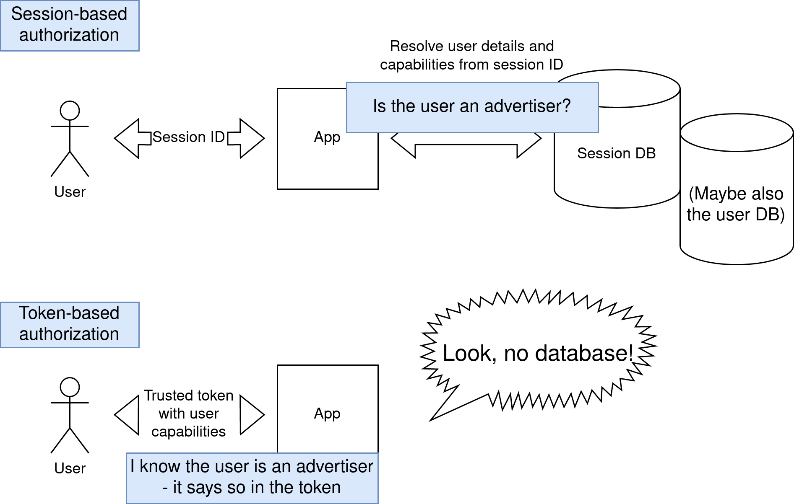

Quick background
- Node.js user of 9+ years
- Senior developer at AdTonos
- 360° marketplace for digital audio advertising
- Many parties involved: advertisers, publishers
P.S. We're hiring!
Problem introduction
- You've created some basic routes...
- You've designed a nice login screen...
- ...and now what?
Need to keep the user logged in.
But also to turn features on/off for given types of users.
Authentication vs authorization
In the context of users:
- Authentication
- Proving who you are
- Authorization
- Controlling access to resources

Flow of authentication and authorization in a typical app
Secret, option A: Sessions
Session ID - an opaque reference to server-side state
1c0dd6ca-039e-402b-8b17-5c95f2205ad3
Needs resolving to a set of user capabilities.
Secret, option B: JSON Web Tokens

Bearer token with claims about the user's capabilities
JWT already contains user info
{
"sub": "alex@ads.example.com",
"role": "advertiser",
"iat": 1654627044,
"exp": 1654628844
}

Authorization differences between sessions and JWT
The DB request: both sides of the coin
- Run-time cost
- Opportunity to discover invalidation
Sessions: pros and cons
| + |
- |
| Instant invalidation |
Latency |
| Listability |
Coupling to central DB |
| Auxiliary data |
Race conditions |
"Fixing" sessions
- Limit scope of middleware
Most Web frameworks let you apply middlewares:
per route (Express)
or per module (Fastify).
- Use a fast, sharded DB
- Stop storing app state in sessions (store references)
JSON Web Token: pros and cons
| + |
- |
| No infrastructure |
Cannot force expiration |
| Obvious to scale |
Hard to keep transient data |
| One issuer, multiple audience |
Transparent payload |
"Fixing" JWT
- Use access + refresh token pairs
- Refresh token
- A token that allows generating a new access token
- Discuss expiry times with incident response team
- Use local storage for cart references etc.
- Is this better than sessions?
A hybrid?
- Access + refresh tokens
- 1 refresh token = 1 session
- Access checking at edge, refresh via central DB
Abstracting for flexibility
- In-memory model of capabilities
- Business logic independence from session/token mechanism
interface CurrentUser {
isAdmin(): boolean;
isAdvertiser(): boolean;
}
Rules of thumb
- Sessions are fine for most user-facing apps
- Use JWT for bulk APIs and pre-signed URLs
- Use JWT with refresh tokens for federation
- Abstract secret-passing away from logic
- Know how to cut off access and how long it will take
Third-party solutions
- Keycloak (OSS)
- auth0 (commercial)
- Supertokens (OSS/commercial)
Closing remarks
- You're responsible for authorization even if you don't manage authentication
- Pick the right tool for the job
- Talk to security / incident response people
See you next month at WarsawJS